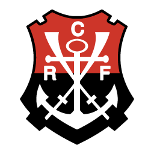
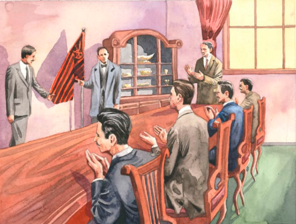
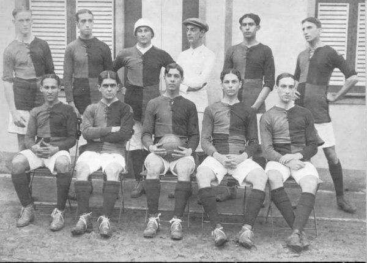

Clube de Regatas do Flamengo
Nasce uma Paixão

No casarão de número 22 da Praia do Flamengo, onde morava Nestor de Barros, um grupo de jovens funda o Grupo de Regatas do Flamengo no dia 17 de Na ocasião definiram que as cores da associação seriam o azul, do mar e do céu, e o ouro, das riquezas do Brasil. Outra decisão diz respeito à data do aniversário do clube. Apesar do Flamengo ter sido criado no dia 17 de novembro, os fundadores tiveram a brilhante decisão de antecipar o aniversário em dois dias. Assim, todo a festa seria realizada sempre em um feriado, o da Proclamação da República. Os presentes na reunião foram: Nestor de Barros, Mario Spíndola, José Agostinho Pereira Cunha, Napoleão de Oliveira, Lucci Collás, José Maria Leitão da Cunha, Carlos Sardinha, Eduardo Sardinha, Desidério Guimarães, George Leuzinger, Felisberto Laport, Mauricio Rodrigues Pereira, Emygdio Pereira e José Feliz da Cunha Menezes. Domingo de Azevedo Marques, que era guarda-marinha, estava passando na porta da Casa de Nestor de Barro e foi convidado a participar. Augusto Lopes de Silveira, José Augusto Chalreo, João de Almeida Lustosa e Maurício Rodrigues Pereira não estiveram na reunião, mas assinaram a ata. Domingos de Azevedo Marques foi eleito presidente por aclamação, Lucci Collás foi o vice-presidente, Felisberto Laport, o tesoureiro.
No mar e na terra
Quer presente melhor? Em uma véspera de Natal foi criado, em uma assembleia extraordinária, o Departamento de Esportes Terrestres do Clube de Regatas do Flamengo. Naquele ano de 1911, uma divergência entre jogadores e comissão técnica no Fluminense levou à saída de nove atletas do clube tricolor. Pensaram em fundar um novo clube, mas Alberto Borgerth, desde criança remador rubro-negro, teve uma ideia: levar o futebol para o Mengão. Fazia todo sentido. No passado, o presidente do Flamengo Virgílio Leite – em exercício do cargo – participou de forma efetiva da criação do clube das Laranjeiras, sendo um dos que assinaram a ata de fundação. Foi ele também um dos que propôs o nome de Oscar Cox como primeiro presidente do coirmão. Outros rubro-negros também constam como fundadores do tricolor. Sócio do Flamengo, Manoel Rios presidiu a mesa da reunião de fundação; Arthur Gibbons, que seria presidente do Mengão em 1903, também consta na ata. Mas voltando àquele 24 de dezembro de 1911, a direção rubro-negra, a princípio, encarou a proposta de Borgerth com algumas restrições, porém, resolveu aceitá-la. Nascia ali o futebol do Flamengo. O resto é história de raça, amor e paixão.
Estreia de gala
A primeira partida do futebol do Flamengo foi logo uma goleada histórica: 15 a 2 sobre o Mangueira (RJ). O jogo, válido pelo Campeonato Carioca, foi disputado no campo do America (RJ), na Rua Campos Salles. Com menos de um minuto de jogo, Gustavo de Carvalho abriu o placar para o Mengão, abrindo o caminho para o placar arrasador. A escalação pioneira tinha Baena, Píndaro e Nery; Coriol, Gilberto e Galo; Bahiano, Arnaldo, Amarante, Gustavo e Borgerth. Naquela época, além do campeonato principal, se disputava também o de “segundos quadros”. E foi nesta categoria a primeira conquista do futebol rubro-negro: no dia 15 de novembro de 1912, os rubro-negros venceram o America por 4-2 e ficaram com a taça. O título foi comemorado junto com o aniversário do Clube, em uma grande festa na sede da praia, já conhecida como República Paz e Amor. Veja o vídeo em quadrinhos de como foi o primeiro gol do Flamengo, marcado por Gustavo de Carvalho.